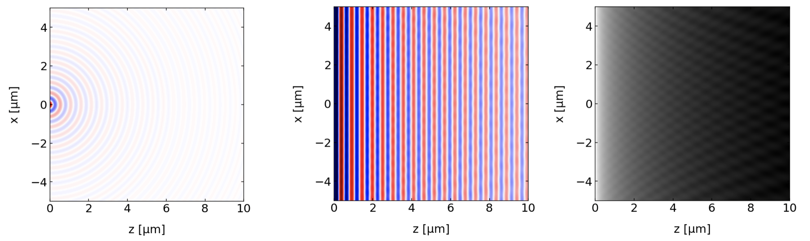
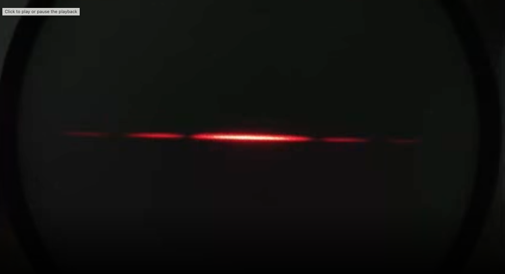
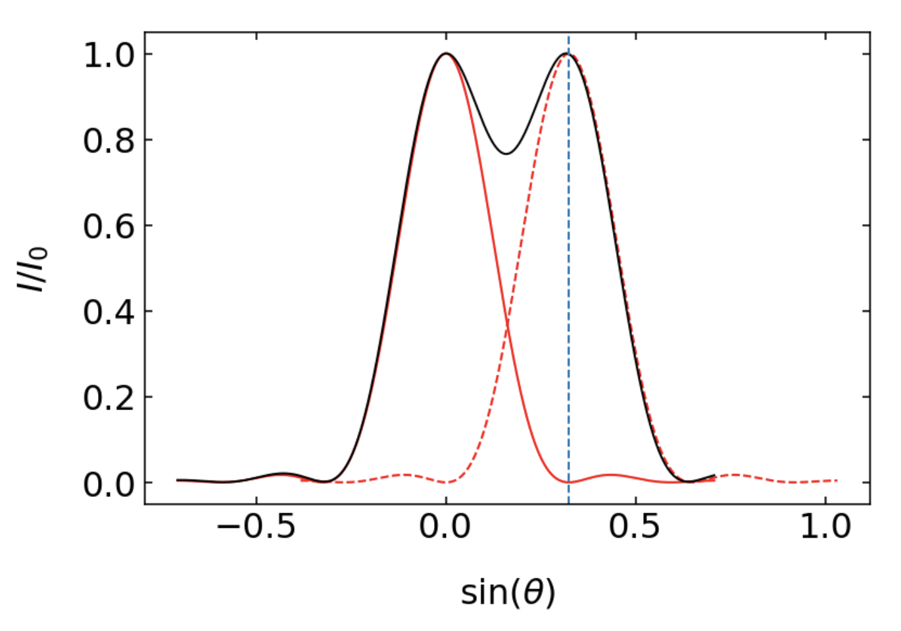

This page was generated from `/home/lectures/exp3/source/notebooks/L11/Diffraction.ipynb`_.

Diffraction¶
[2]:
import numpy as np
import matplotlib.pyplot as plt
from time import sleep,time
from ipycanvas import MultiCanvas, hold_canvas,Canvas
import matplotlib as mpl
import matplotlib.cm as cm
%matplotlib inline
%config InlineBackend.figure_format = 'retina'
# default values for plotting
plt.rcParams.update({'font.size': 12,
'axes.titlesize': 18,
'axes.labelsize': 16,
'axes.labelpad': 14,
'lines.linewidth': 1,
'lines.markersize': 10,
'xtick.labelsize' : 16,
'ytick.labelsize' : 16,
'xtick.top' : True,
'xtick.direction' : 'in',
'ytick.right' : True,
'ytick.direction' : 'in',})
Huygens Principle¶
The Huygens principle states, that each point of a wavefront is the source of a spherical wave in forward direction. This means nothing else, that any wave can be expanded into a superposition of spherical waves, which is the fundamental of Mie scattering for example. Yet, the overall statement of this principle seems a bit unphysical. Classically, accelerated charges are the source of electromagnetic waves. If there is no accelerated charge, there is no wave. Yet, the Huygens principle is in accord with quantum field theory.

Fig.: Huygens principle for a plane wave incident with a wave vector \(\vec{k}\).
The sketch above illustrates the Huygens principle, but we may also check that numerically. The graphs below were calculated to illustrate Huygens principle using spherical waves placed in a line close to each other.

Fig.: Huygens principle used to create a plane wave from a set of spherical waves. The graph on the left shows the amplitude of a single spherical wave of a wavelength \(\lambda=532\) nm. If we arange 500 spherical wave sources along the x-direction very densely and they all are in phase since the represent the phase of the incident plane wave at \(z=0\), we can recreate the plane wavefronts for \(z>0\) (middle) and the constant intensity (right).
We have already dealt with all of the mathematics describing this situation. We have earlier looked at the interference of multiple waves with the same amplitude. In this case we have \(N\) spherical waves arranged along the x-axis at \(z=0\) with neighboring sources at a distance \(d\). If we consider the interference at infinite distance, the phase difference between the neighboring waves is given by \(\Delta \phi=2\pi/\lambda d\sin(\theta)\), where \(\theta\) is the angle with the z-direction. Thus all \(N\) waves give according to our previous calculations an intensity pattern
This is again our starting point for the next calculations concernign a single slit, which confines the range of Huygens waves emitted to a region along the x-direction. This interference of Huygens waves is termed diffraction, yet the physical principle behind is interference. Our second calculation will have a look at many slits arranged along the x-direction, which is then called a diffraction grating. The latter is an indispensible tool for spectroscopy.
Single Slit diffraction¶
We would like to apply this formula to study the diffraction of an incident plane wave (wavevector \(k\)) on a single slit of width \(b\). Along this slit opening we place a number of Huygens sources. The sketch below has 3 Huygens sources. We may generalize that to \(N\) sources.

Fig.:
We will devide the slit into segments of width \(\Delta b\) such that we have \(N=b/\Delta b\) Huygens sources with an amplitude \(A_0=\sqrt{I_0}\) along the slit. We may then apply the formula from teh previous section for the multi-wave interference using \(d=\Delta b\). We obtain
where we can replace the \(\Delta b\) in the denominator by \(\Delta b=N/b\) to yield
Substituting \(x=\pi \frac{b}{\lambda}\sin(\theta)\)
then gives
Since we do not have a finite number \(N\) sources in the slit, we have to consider the limit of the above formula for \(N\rightarrow\infty\), which we have to calculate for the denominator. There with increasing \(N\) the argument of the sine function becomes very small and we can use our small angle expansion of the sine function to yield
and therefore
where \(I_s=N^2I_0\). The function \(sin(x)/x\) is often abbrevated as \(\sinc(x)\), which is the sinus cardinalis.
Single Slit Diffraction
The intensity distribution generated by the diffraction of monochromatic light on a single slit and observed in the far field is given by
where \(\lambda\) is the wavelength of the light and \(b\) the width of the slit. The angle of observation is given by \(\theta\). Note that the diffraction pattern on any aperture is resulting from the fact that you remove Huygens sources that would be normally needed to form a plane wavefront for example.

Fig.: Total wave amplitude behind a slit (b=2µm) for an incident wave of 532 nm wavelength. The plot in the middle shows the intensity in the space behind the slit. The graph on the right displays the diffraction pattern at a screen at 100 µm distance from the slit.
Let’s have a look at some of the properties of the intensity distribution with the help of some python code.
Function definition
[3]:
def single_slit(d,theta,wl):
d=np.pi*d/wl*np.sin(theta)
return((np.sin(d)/d)**2)
Parameter definition
[4]:
wl=532e-9
b=5e-6
theta=np.linspace(-np.pi/6,np.pi/6,1000)
Plotting
[11]:
plt.figure(figsize=(15,5))
plt.subplot(1,2,1)
plt.plot(np.sin(theta),single_slit(b,theta,532e-9),'green',lw=2,label="532 nm")
plt.plot(np.sin(theta),single_slit(b,theta,700e-9),'red',lw=2,label="700 nm")
plt.annotate('first minimum 700 nm',xy=(0.14, 0),xytext=(0.14, 0.25),arrowprops=dict(facecolor='black', width=0.5,headwidth=6))
plt.xlabel(r'$\sin(\theta)$')
plt.ylabel('$I/I_s$')
plt.legend()
plt.subplot(1,2,2)
plt.plot(np.sin(theta),single_slit(b/2,theta,532e-9),'green',lw=2,label="532 nm")
plt.plot(np.sin(theta),single_slit(b/2,theta,700e-9),'red',lw=2,label="700 nm")
plt.xlabel(r'$\sin(\theta)$')
plt.ylabel('$I/I_s$')
plt.legend()
plt.show()
The two plots show the characteristic diffraction pattern of a single slit, which is an oscillating function, decaying in amplitude. The oscillation is defined by the numerator and the decaying amplitude by the denominator. The left graph displays the diffraction pattern as a function of \(\sin(\theta)\) for two different wavelength for a slit width of \(b=5\, {\rm \mu m}\). The right graph displays the diffraction of the same wavelength for only half the slit width \(b=2.5\, {\rm \mu m}\). Looking at these graphs, we can make the following observations
longer wavelength show a wider diffraction pattern
small slit width creates a wider diffraction pattern
We can also quantify these observation by calculating the minima of the oscillating denominator. The denomintor becomes zero whenever the argument of the sine square function is \(\pi\). From this it easily follows that
to have a minimum in the intensity of slit diffraction. This type of dependency, i.e. wavelength divided by the dimension of the diffracting object, is valid in general even though it migh show up with diffreent numerical prefactors for other diffracting geometries.

Fig.: Diffraction patterns as a function of the sine of the diffraction angle. The minima of the diffraction pattern in this plot are at integer multiples of \(\lambda/b\).
 
Fig.: Diffraction patterns on a single slit as observed in the lecture. The left image shows the diffraction patter for red light, while the right image combines two different wavelength (red, blue), where one clearly recognizes the wider diffraction peaks for the longer red wavelength.
Circular Aperture¶
A similar but a bit more involved calculation can be done for a circular aperture. The result of this calculation is
with
where \(J_1\) is the Bessel function of first kind, \(R\) is the radius of the aperture. The Bessel function is similar to the sine function and oscillating function but has its zeros at \(x_1=1.22 \pi\), \(x_2=2.23 \pi\) and so on.

Fig.: Diffraction pattern of a circular aperture of radius \(5\) µm. Note that the intensity scale is saturated. The diffraction rings would otherwise not be visible. The minima of the diffraction pattern in this plot are at integer multiples of \(0.61\lambda/R\).
According to the zeros of the numerator, we can again obtain the sine of the angle under which the first minimum in the intensity occurs in radial direction from the center of the diffraction pattern. We just have to set
which yields
We recognize the same dependence as before: wavelength divided by the dimension of the diffracting element. The width of the diffraction peak in the center is well defined by this first minimum. This minimum therefore defines the radius of the so called Airy disc. In the language of microscopy, it defines the size of a resolution element which is termed resel.
Diffraction on the Eye-Iris
The above description gives us some nice insight into diffraction effects which occur on the aperture of the eye - the iris. So lets do some quick estimate.
The aperture of the iris has a radius of \(R=2.5\) mm giving us for a wavelength of \(\lambda=532\) nm the sine of the diffraction angle to be
If we multiply this value with the diameter of the eye (roughly 2 cm), we obtain the size of the Airy disc on the “screen”, which is the retina.
So the width of the diffraction pattern of light on the retina is roughly 2.59 µm, which corresponds well to the distance between light sensitive cell in the eye around the fovea. In this region we find densities of aroiund \(150.000\) cells per square millimeter, which gives a distance of 2.58 µm. It is not usefull to spend a larger amount of cells on a region of an Airy disc, as it does not increase the resolution but requires the cells to be more sensitive, as they have to share the intensity.
Resolution of an Optical Microscope¶
Resolution Definition by Reighleigh
We may spin this idea a bit further and use the diffraction pattern of a circular aperature to define the resolution of a microscope or of an optical system in general. We would like to answer the question: How close can be place two objects to be still resolved as two objects when imaged by a lens. To answer that question we first have to understand the action of a lens in wave optics. It does two things. It first of course alters the curvature of the wavefronts such that a plane wave is focused towards the focal point on the other side of the lens. The second effect ist, that the lense has a finite size, such that it can not collect all of the plane wavefront to be focused. It just cuts out a circular part. This effect corresponds to the diffraction on a circular aperture.

Fig.:
Corresponding to the above picture, we therefore create a diffraction patter for each point source on the left side. The closer the two sources come,the more will the twio diffraction patterns merge on the other side. The resolving power of a microscope may now be defined in various ways. We will refer to the definition by Rayleigh, called the Reighleigh criterion, sketched below.

Fig.: $.
The Rayleigh criterion defines two objects as still resolvable, if the maximum of the second diffraction pattern is located at the first minimum of the first diffraction pattern (see sketch above). In this case the sum of the two intensity distribution will have a minimum between the two peaks, where the intensity is reduced by 26%. Note that in this case we refer to two light sources which are incoherent, such that we do not have to consider interference.
According to the figure above, the diffraction angle for the first minimum is given by
In the case of small angles, we can approximate
where d is the distance between \(P_1^{\prime}\) and \(P_1^{\prime}\), which then gives together with the first equation
On the other side, we know from the imaging equation, that
Combining both equations will yield
where \(\alpha\) is the angle under which the light is collected on the object side. We can introduce a new quantity, which contains that collection angle \(\alpha\). This quantity is the numerical aperture
and \(n\) is refractive index of the medium in which the lens is placed (was \(n=1\) here so far). Together we therefore obtain for the Rayleigh criterium of a lens (microscope or telecope)
Rayleigh resolution criterium
The Rayleigh resolution criterium states, that two incoherent light sources can still be resolved as two independent sources, if their distance \(\Delta d\) is larger or equal to the wavelength divided by the numerical aperature of the lens used for imaging.
The numerical aperture is given by \(NA=n\sin(\alpha)\) by the refractive index of the medium surrounding the lens times the sine of the opening angle under which the lens collects light. The numerical aperature of a lens in air is consequently smaller than 1. Lenses in other media than air like in water or oil are called immersion lenses and have a refractive index being at maximum the refractive index of the medium.
Loosly speaking you may see this formula as the following. If light emerges from point \(P_1\) in form of a spherical wave of wavelength \(\lambda\), then a larger collection angle \(\alpha\) means better information about where the light actually originated from. You collect more of the spherical wavefront for a larger angle.
Resolution Definition by Abbe
While we considered before the spacing between two diffraction patterns resulting from wo incoherent point-like light sources. The definition of the resolution by Abbe refers to two coherent light sources. If we have two coherent light sources, we cannot just sum up both intensity distributions, but we have to calculate the total amplitude first before we may determine the total intensity.